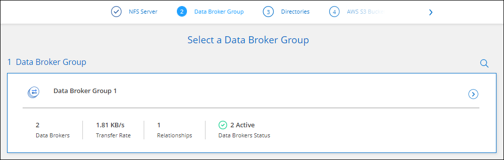

发行说明
发行说明
创建同步关系
 建议更改
建议更改
创建同步关系时、BlueXP复制和同步服务会将文件从源复制到目标。初始副本完成后、服务将每 24 小时同步所有更改的数据。
在创建某些类型的同步关系之前、您需要先在BlueXP中创建一个工作环境。
为特定类型的工作环境创建同步关系
如果要为以下任一项创建同步关系，则首先需要创建或发现工作环境：
-
适用于 ONTAP 的 Amazon FSX
-
Azure NetApp Files
-
Cloud Volumes ONTAP
-
内部 ONTAP 集群
-
创建或发现工作环境。
-
选择*Canves*。
-
选择与上述任何类型匹配的工作环境。
-
选择 Sync 旁边的操作菜单。

-
选择 * 从此位置同步数据 * 或 * 将数据同步到此位置 * ，然后按照提示设置同步关系。
创建其他类型的同步关系
使用以下步骤将数据同步到或不同步适用于 ONTAP ， Azure NetApp Files ， Cloud Volumes ONTAP 或内部 ONTAP 集群的 Amazon FSX 以外的受支持存储类型。以下步骤提供了一个示例，说明如何设置从 NFS 服务器到 S3 存储分段的同步关系。
-
在BlueXP中，选择*Sync*。
-
在 * 定义同步关系 * 页面上，选择源和目标。
以下步骤提供了如何创建从 NFS 服务器到 S3 存储区的同步关系的示例。

-
在 * NFS Server* 页面上，输入要同步到 AWS 的 NFS 服务器的 IP 地址或完全限定域名。
-
在 * 数据代理组 * 页面上，按照提示在 AWS ， Azure 或 Google Cloud Platform 中创建数据代理虚拟机，或者在现有 Linux 主机上安装数据代理软件。
有关详细信息，请参阅以下页面：
-
安装数据代理后，选择*CONTINUD*。

-
在 * 目录 * 页面上，选择顶级目录或子目录。
如果BlueXP复制和同步无法检索导出、请选择*手动添加导出*并输入NFS导出的名称。

如果要同步 NFS 服务器上的多个目录、则必须在完成后创建其他同步关系。 -
在 * AWS S3 Bucket* 页面上，选择一个存储分段：
-
向下钻取以选择存储桶中的现有文件夹或选择在存储桶内创建的新文件夹。
-
选择*添加到列表*以选择与您的AWS帐户无关的S3存储分段。 "必须将特定权限应用于 S3 存储区。"。
-
-
在 * 分段设置 * 页面上，设置分段：
-
选择是否启用 S3 存储分段加密，然后选择 AWS KMS 密钥，输入 KMS 密钥的 ARN 或选择 AES-256 加密。
-
选择 S3 存储类。 "查看支持的存储类。"。

-
-
【设置】在 * 设置 * 页面上，定义源文件和文件夹在目标位置的同步和维护方式：
- 计划
-
为将来的同步选择重复计划或关闭同步计划。您可以计划一个关系以每 1 分钟同步一次数据。
- 同步超时
-
定义在指定的分钟数、小时数或天数内未完成同步时、BlueXP复制和同步是否应取消数据同步。
- 通知
-
用于选择是否在BlueXP的通知中心接收BlueXP副本和同步通知。您可以为成功的数据同步、失败的数据同步和已取消的数据同步启用通知。
- 重试
-
定义BlueXP复制和同步在跳过文件之前应重试同步文件的次数。
- 持续同步
-
初始数据同步完成后、BlueXP复制和同步将侦听源S3存储分段或Google Cloud Storage分段上的更改、并在发生任何更改时持续同步到目标。无需按计划间隔重新扫描源。
只有在创建同步关系以及将数据从S3存储分段或Google Cloud Storage同步到Azure Blob存储、CIFS、Google Cloud Storage、IBM Cloud Object Storage、NFS、S3、 和StorageGRID *或*从Azure Blob存储到Azure Blob存储、CIFS、Google云存储、IBM云对象存储、NFS和StorageGRID。
如果启用此设置、则会影响以下其他功能：
-
同步计划已禁用。
-
以下设置将还原为其默认值：Sync Timeout、Recently Modified Files和Date Modified。
-
如果S3为源、则按大小筛选仅在复制事件(而不是删除事件)上处于活动状态。
-
创建此关系后、您只能加快或删除此关系。您不能中止同步、修改设置或查看报告。
可以使用外部存储分段创建持续同步关系。为此、请执行以下步骤：
-
转到外部存储分段项目的Google Cloud控制台。
-
转到*云存储>设置>云存储服务帐户*。
-
更新local.json文件：
{ "protocols": { "gcp": { "storage-account-email": <storage account email> } } } -
重新启动数据代理：
-
sudo PM2 stop all
-
sudo PM2 start all
-
-
创建与相关外部存储分段的持续同步关系。
用于创建与外部存储分段的持续同步关系的数据代理将无法与其项目中的存储分段创建另一个持续同步关系。
-
-
- 比较依据
-
选择在确定文件或目录是否已更改且应再次同步时、BlueXP复制和同步是否应比较某些属性。
即使取消选中这些属性、BlueXP复制和同步仍会通过检查路径、文件大小和文件名来将源与目标进行比较。如果有任何更改，则会同步这些文件和目录。
您可以通过比较以下属性来选择启用或禁用BlueXP副本和同步：
-
* mtime* ：文件的上次修改时间。此属性对目录无效。
-
* uid* ， * gid* 和 * 模式 * ： Linux 的权限标志。
-
- 复制对象
-
启用此选项可复制对象存储元数据和标记。如果用户更改了源上的元数据、BlueXP复制和同步会在下次同步时复制此对象、但如果用户更改了源上的标记(而不是数据本身)、BlueXP复制和同步不会在下次同步时复制此对象。
创建关系后，您无法编辑此选项。
包含Azure Blob或与S3兼容的端点(S3、StorageGRID 或IBM云对象存储)作为目标的同步关系支持复制标记。
以下任一端点之间的 " 云到云 " 关系支持复制元数据：
-
AWS S3
-
Azure Blob
-
Google Cloud 存储
-
IBM 云对象存储
-
StorageGRID
-
- 最近修改的文件
-
选择排除在计划同步之前最近修改的文件。
- 删除源上的文件
-
选择在BlueXP复制后从源位置删除文件、然后同步将文件复制到目标位置。此选项包括数据丢失的风险，因为源文件会在复制后被删除。
如果启用此选项，则还需要更改数据代理上 local.json 文件中的参数。打开文件并按如下所示进行更新：
{ "workers":{ "transferrer":{ "delete-on-source": true } } }更新local.json文件后、应重新启动：
pm2 restart all。 - 删除目标上的文件
-
如果文件已从源文件中删除，请选择从目标位置删除这些文件。默认情况下，从不从目标位置删除文件。
- 文件类型
-
定义要包括在每次同步中的文件类型：文件、目录、符号链接和硬链接。
硬链接仅适用于不安全的NFS到NFS关系。用户只能使用一个扫描程序进程和一个扫描程序并发性、扫描必须从根目录运行。 - 排除文件扩展名
-
通过键入文件扩展名并按*Enter*，指定要从同步中排除的正则表达式或文件扩展名。例如，键入 log 或 .log 排除 * 。 log 文件。多个扩展不需要分隔符。以下视频提供了简短演示：
正则表达式或正则表达式与通配符或glob表达式不同。此功能*仅*适用于正则表达式。 - 排除目录
-
通过键入名称或目录完整路径并按*Enter*，最多指定要从同步中排除的15个正则表达式或目录。默认情况下、不包括.copy-ofovert、.snapshot、~snapshot目录。
正则表达式或正则表达式与通配符或glob表达式不同。此功能*仅*适用于正则表达式。 - 文件大小
-
选择同步所有文件、无论文件大小如何、还是仅同步特定大小范围内的文件。
- 修改日期
-
选择所有文件，无论其上次修改日期、在特定日期之后修改的文件、特定日期之前或时间范围之间的文件。
- 创建日期
-
如果 SMB 服务器是源服务器，则可以通过此设置在特定日期之后，特定日期之前或特定时间范围之间同步创建的文件。
- ACL —访问控制列表
-
通过在创建关系时或创建关系后启用设置、从SMB服务器复制ACL Only、文件only或ACL and files。
-
在 * 标记 / 元数据 * 页面上，选择是将密钥值对另存为传输到 S3 存储分段的所有文件的标记，还是为所有文件分配元数据密钥值对。


将数据同步到 StorageGRID 和 IBM 云对象存储时，也可以使用此功能。对于 Azure 和 Google Cloud Storage ，只有元数据选项可用。 -
查看同步关系的详细信息，然后选择*创建关系*。
-
结果 *
-
BlueXP复制和同步开始在源和目标之间同步数据。
根据BlueXP分类创建同步关系
BlueXP复制和同步与BlueXP分类集成在一起。在BlueXP分类中、您可以使用BlueXP副本和同步选择要同步到目标位置的源文件。
从BlueXP分类启动数据同步后、所有源信息都包含在一个步骤中、只需输入一些关键详细信息即可。然后，选择新同步关系的目标位置。